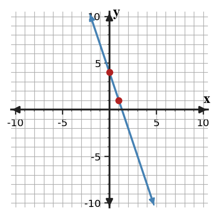
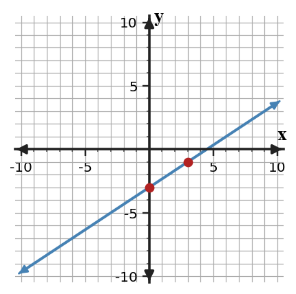
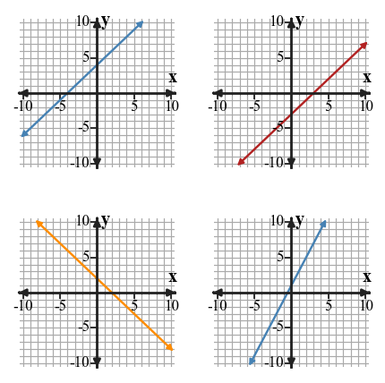

Graphing Linear Functions
Mathematical idea: A linear graph shows a starting value and a constant step pattern.
Today you will identify slope and intercepts, use them to graph lines, and interpret what features mean. You will also check tables and graphs for mismatches.
Learning Target
Learning Target: Students will graph linear functions and interpret key features.
I can statements
- I can build graphs of linear functions using slope and intercept information.
- I can use key features of a line to interpret a relationship.
- I can extend a graph to predict outputs within a meaningful range.
What's To Come
This is a long-range preview for future lessons. Do not solve it today. Instead, annotate it individually. Circle anything familiar, underline symbols or directions that seem important, and write notes about what information you think will be needed later.
As you annotate, ask yourself: What parts (words, symbols, graphs) do you KNOW? What parts look FAMILIAR? What parts look like jibberish?
Intro
Directions
Read the introduction aloud with a partner or in a small group. As you read, annotate the text by highlighting important ideas, circling key vocabulary, and writing short notes about connections, questions, or predictions in the margins.
A line can be graphed efficiently when its equation is in slope-intercept form. The value $b$ gives the $y$-intercept, which is the point where the graph crosses the $y$-axis. It is often the starting value in a real situation.
After the starting point is marked, slope tells how to move to another point. A slope of $\frac{2}{3}$ means move up 2 and right 3, while a negative slope moves down as the input moves right. Repeating the same move builds the line.
Some graphs represent real quantities such as time, distance, or money. A graph for months or dollars should focus on values that make sense for the problem. This keeps predictions tied to the situation instead of drawing attention to impossible inputs.
You will use coordinate plane graphs, slope-intercept form, tables from rules, and contextual axes. Each representation should show the same starting value and the same constant rate of change.
When a graph is extended, the line can predict outputs within a meaningful range. The farther a prediction moves away from the context, the more carefully it should be checked.
Stop and Discuss
- In $y=mx+b$, what does $b$ tell you on a graph?
- How can slope help you move from one point to another on a line?
- Why should a contextual graph use a meaningful range instead of every possible number?
Slope-intercept form names the two graph features you need first: slope and $y$-intercept.
$$y=mx+b$$| Symbol | Graph meaning | Example from $y=-3x+4$ |
|---|---|---|
| $m$ | rate of change | $-3$ |
| $b$ | $y$-intercept | $4$ |

Context: If $x$ is time and $y$ is amount left, $b=4$ is the starting amount and $m=-3$ is the decrease each time unit.
Example 1: Identify Slope and Intercept
For the equation $y=-3x+4$, identify the slope and the $y$-intercept.
- What is the slope?
- What is the $y$-intercept as a number?
- What point does the $y$-intercept give you on the graph?
You Try It 1: Identify Another Slope and Intercept
For the equation $y=\frac{5}{2}x-6$, identify the slope and the $y$-intercept.
- What is the slope?
- What is the $y$-intercept as a number?
- What point does the $y$-intercept give you on the graph?
Stop and Discuss
- How does the $y$-intercept become a point on the graph?
To graph from $y=\frac{2}{3}x-3$, start at $(0,-3)$ and use the slope move up 2, right 3.
$$m=\frac{2}{3},\qquad b=-3$$| Start | Move | Next point |
|---|---|---|
| $(0,-3)$ | up 2, right 3 | $(3,-1)$ |

Context: The intercept is the output when the input is 0, and the slope is the repeated change after that.
Example 2: Graph from Slope-Intercept Form
Graph $y=\frac{2}{3}x-3$ on the coordinate plane.

- Plot the $y$-intercept.
- Use the slope to plot a second point.
- Explain how the graph shows both the slope and the $y$-intercept.
You Try It 2: Graph Another Line
Graph $y=-\frac{1}{2}x+5$ on the coordinate plane.
- Plot the $y$-intercept.
- Use the slope to plot a second point.
- Explain how the graph shows both the slope and the $y$-intercept.
Stop and Discuss
- What was the first point you plotted in the Example and YTI, and why?
When several lines are shown, compare both slope and intercept before choosing an equation.
| Equation | Slope | $y$-intercept |
|---|---|---|
| $y=x+4$ | 1 | 4 |
| $y=x-3$ | 1 | $-3$ |
| $y=-x+2$ | $-1$ | 2 |
| $y=2x+1$ | 2 | 1 |

Context: Two lines can have the same slope but different starting values, so both features matter.
Example 3: Match Lines to Equations
Four lines are shown. Match each line to one of these equations: $y=x+4$, $y=x-3$, $y=-x+2$, and $y=2x+1$.
- Choose one graph and identify its $y$-intercept.
- Use slope to match that graph to an equation.
- Explain why one of the other equations does not match that graph.
You Try It 3: Choose an Equation from Features
Three equations are $y=3x-2$, $y=-2x+3$, and $y=3x+1$. A graph has a positive slope and crosses the $y$-axis at $-2$.
- Identify which equation matches the description.
- Explain how the slope helped you eliminate one equation.
- Explain how the intercept helped you choose between the remaining equations.
Stop and Discuss
- Why is matching only the slope not enough to identify a line?
Example 4: Find a Table Mismatch
The equation $y=4x-1$ and the table are meant to match.
| $x$ | 0 | 1 | 2 | 3 |
|---|---|---|---|---|
| $y$ | $-1$ | 3 | 8 | 11 |
- Use the equation to check each output.
- Find the first mismatch.
- Revise the incorrect value and explain the graph feature the table should show.
You Try It 4: Find Another Table Mismatch
The equation $y=-2x+7$ and the table are meant to match.
| $x$ | 0 | 1 | 2 | 3 |
|---|---|---|---|---|
| $y$ | 7 | 5 | 4 | 1 |
- Use the equation to check each output.
- Find the first mismatch.
- Revise the incorrect value and explain the graph feature the table should show.
Stop and Discuss
- What table value broke the constant slope pattern, and how did the equation help you find it?
Summary
A linear function can be graphed by starting at its $y$-intercept and using its slope to move to more points. These two features describe the line clearly.
In $y=mx+b$, $m$ is the slope and $b$ is the $y$-intercept. A table or graph should match both of those features if it represents the same function.
A common error is plotting the intercept correctly but using the slope upside down or with the wrong sign.
Strong understanding means you can build a graph, read its features, and use those features to check whether a table, equation, or context agrees.
Common Mistakes
- Reversing slope. Why it is tempting: the rise and run are both visible. What to check instead: use vertical change over horizontal change.
- Forgetting the intercept. Why it is tempting: starting at the origin feels automatic. What to check instead: start at $(0,b)$.
- Dropping the sign. Why it is tempting: a slope move may be counted correctly. What to check instead: decide whether the line rises or falls to the right.
- Matching one feature only. Why it is tempting: two lines can share a slope or intercept. What to check instead: check slope and intercept.
- Overextending context. Why it is tempting: a line can continue forever mathematically. What to check instead: use the meaningful range for the situation.
Optional Future Task Reflection
Look back at the future task. Do not solve it yet. Highlight one part that makes more sense now than it did at the beginning. Circle one part that still feels unfamiliar. Write one sentence about what representation you would look at first.
What is one idea about graphing linear functions you understand better now than at the start of class? Write at least one complete sentence.
What is one thing about graphing linear functions you still want to understand or practice? Be specific — name the idea, not just "everything."